Salt e wireframes
Um wireframe é o esqueleto de uma tela: mostra onde ficam os campos, botões e listas, sem se preocupar com cores, fontes ou imagens. Ele serve para discutir a estrutura de uma interface cedo, quando mudar ainda é barato. [4]
Depois do wireframe costumam vir o mockup, uma versão visual com cores e imagens reais, e o protótipo, que já pode ser navegado e clicado. [5] [6]
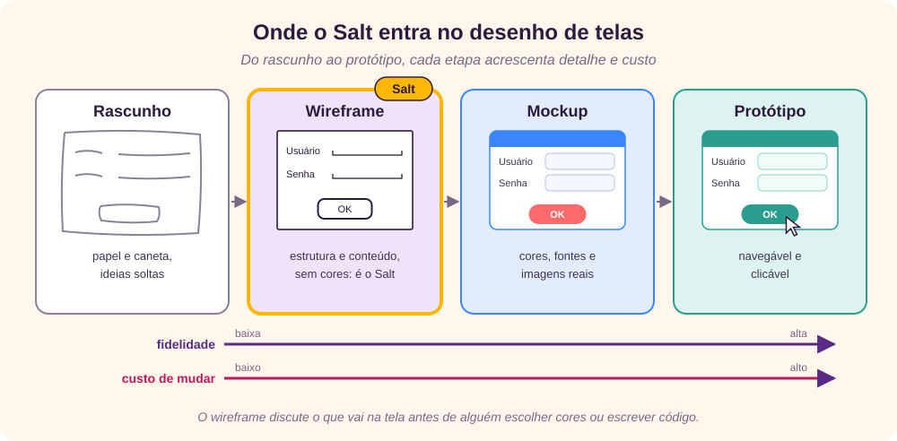
O Salt é a parte do PlantUML que desenha wireframes a partir de texto. Você descreve a tela com símbolos simples, como [OK] para um botão ou [X] para uma caixa marcada, e o PlantUML gera a imagem. Como tudo é texto, o wireframe cabe no controle de versão, ao lado do código e da documentação. [2] [3]
O que é preciso
- Java e o arquivo
plantuml.jar, ou uma extensão de editor, como a do VS Code, ou o servidor on-line do PlantUML. [7] [8] - A sintaxe Creole, que o PlantUML usa para formatar textos (como
<b>para negrito), e os comandos comuns, comoscale. [10] [11] - O texto original também lista o Graphviz, mas ele só é usado por diagramas UML como os de classe e de componentes; o Salt funciona sem ele. [9]
Todos os exemplos deste tutorial foram testados no PlantUML 1.2026.8, e as figuras com fundo branco foram geradas por ele. O texto original foi escrito para a versão 1.2020.23; as diferenças encontradas estão indicadas ao longo do texto. [1]
Estrutura de um arquivo
Um wireframe fica entre @startsalt e @endsalt e tem um bloco principal entre chaves. Dentro dele, cada linha é uma linha da tela, e a barra vertical | separa as colunas. [2]
@startsalt
{
Usuário | "MeuNome "
Senha | "**** "
[Cancelar] | [ OK ]
}
@endsaltLinhas que começam com aspa simples (') são comentários e não aparecem no desenho.
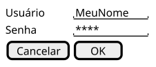
Comandos comuns do PlantUML também valem aqui; o mais útil é scale, que aumenta a imagem (scale 1.5). A forma antiga, @startuml seguido de uma linha com salt, gera erro nas versões atuais: use sempre @startsalt. [11]
Widgets básicos
Widgets são os controles de uma interface: botões, campos, listas. No Salt, cada um tem uma marcação curta. [12]
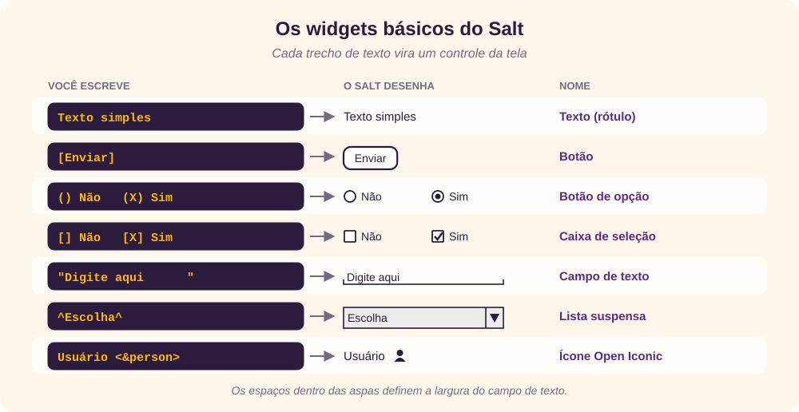
| Widget | Sintaxe | Observação |
|---|---|---|
| Texto | Qualquer texto | Texto solto vira rótulo. |
| Botão | [Enviar] | Espaços dentro dos colchetes alargam o botão: [ OK ]. |
| Botão de opção | () · (X) | Desmarcado · marcado. |
| Caixa de seleção | [] · [X] | Desmarcada · marcada. [ ], com espaço, também funciona. |
| Campo de texto | "Digite aqui " | A largura segue o texto entre aspas, incluindo os espaços. |
| Lista suspensa | ^Escolha^ | Fechada. Com mais itens, ^Item 1^Item 2^Item 3^, ela aparece aberta. |
O texto original descreve a lista suspensa como “create a input box representation”, a mesma frase do campo de texto; é só um erro de cópia. A lista aberta não aparece no original, mas é útil para mostrar as opções disponíveis. [1] [2]
@startsalt
{
Texto simples | [Botão]
() Opção desmarcada | (X) Opção marcada
[] Caixa desmarcada | [X] Caixa marcada
"Digite aqui " | ^Lista suspensa^
. | ^Modo inteligente^Original^Ajustar à tela^
.
.
.
}
@endsalt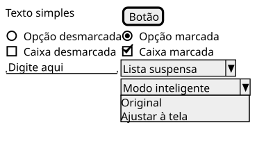
Grades e linhas
Toda chave abre uma grade (uma tabela invisível que alinha os elementos), e o caractere logo depois da chave muda o tipo do bloco. A figura resume as dez variações que este tutorial cobre.
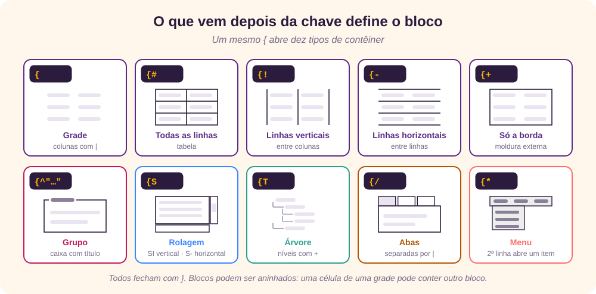
Nas grades, três símbolos controlam as linhas desenhadas: [2]
| Abertura | Linhas desenhadas |
|---|---|
{ | Nenhuma: a grade só alinha. |
{# | Todas, verticais e horizontais. |
{! | Só as verticais. |
{- | Só as horizontais. |
{+ | Só a borda externa. |
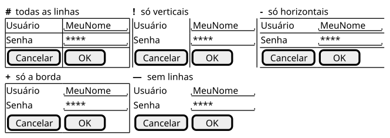
Dentro de uma grade, um ponto (.) cria uma célula vazia, útil para deixar margens ou pular colunas. Em tabelas, um asterisco (*) faz a célula da esquerda se estender por cima da atual, como veremos adiante.
Grupos, rolagem e separadores
Caixa de grupo
{^"Título" desenha uma moldura com um título, para reunir controles relacionados.
Barras de rolagem
{S cria uma área com as duas barras de rolagem; {SI, só a vertical (é um I maiúsculo, de uma barra em pé); e {S-, só a horizontal.
{^"Meu grupo"
Usuário | "MeuNome "
[Cancelar] | [ OK ]
}
{SI
Mensagem
.
.
}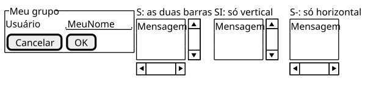
Separadores
Uma linha contendo só dois caracteres repetidos desenha um separador horizontal:
| Linha | Separador |
|---|---|
.. | pontilhado |
== | duplo |
~~ | grosso |
-- | simples |
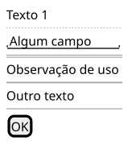
Árvores e tabelas
Árvore
{T cria uma árvore. Cada linha começa com sinais de mais, e a quantidade de + indica o nível: + é a raiz, ++ um filho, +++ um neto.
Árvore com colunas
Somando | às linhas, a árvore ganha colunas, como uma tabela. A primeira linha pode servir de cabeçalho, e os mesmos símbolos das grades definem as linhas: {T!, {T-, {T+ e {T#.
{T#
+Região | População
+ Mundo | 8,2 bilhões
++ América | 1,0 bilhão
+++ Brasil | 212 milhões
++ Europa | 745 milhões
}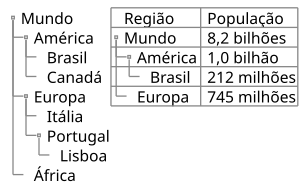
No exemplo original, a coluna “Age” tem o valor 30 em todas as linhas; é um dado de preenchimento. Aqui usamos populações aproximadas de 2025. [1]
Tabela avançada
Em uma tabela {#, o ponto deixa uma célula vazia e o asterisco estende a célula da esquerda:
{#
. | Coluna 2 | Coluna 3
Linha 1 | valor 1 | valor 2
Linha 2 | Uma célula longa | *
}Blocos dentro de blocos
Qualquer célula pode abrir uma nova chave. Assim se alinham vários controles na mesma célula, como no exemplo do original, que imita a janela de criar uma classe Java:
{
Name | " "
Modifiers: | { (X) public | () default | () private | () protected
[] abstract | [] final | [] static }
Superclass: | { "java.lang.Object " | [Browse...] }
}Abas e menus
Abas
{/ cria uma barra de abas, separadas por |. Para destacar a aba ativa, use negrito do Creole: <b>Geral. [10]
Para abas verticais, coloque uma aba por linha e termine o bloco com } |: a barra vertical depois da chave põe o conteúdo seguinte ao lado das abas, e não abaixo. O original repete aqui a mesma descrição das abas horizontais, sem mencionar esse detalhe. [1]
{+
{/ <b>Geral
Tela cheia
Comportamento
Salvar } |
{
{ Abrir imagem em: | ^Modo inteligente^ }
[X] Suavizar imagens ampliadas
[X] Confirmar exclusão
[] Mostrar imagens ocultas
}
[Fechar]
}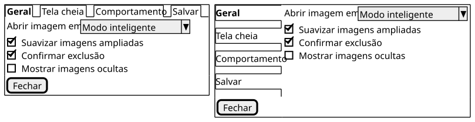
Menus
{* cria uma barra de menus. Uma segunda linha mostra um menu aberto: ela começa com o nome do item e lista as opções, e um hífen isolado (-) vira um separador.
{* Arquivo | Editar | Código | Refatorar
Arquivo | Novo | Abrir arquivo | - | Fechar | Fechar todos }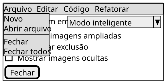
Ícones e pseudo-sprites
Open Iconic
O PlantUML inclui o conjunto de ícones livres Open Iconic. Para usar um, escreva <&nome-do-ícone> em qualquer texto, como <&person> ou <&key>. Para ver a lista completa, gere um diagrama com o comando listopeniconic. [13] [14]
@startuml
listopeniconic
@endumlPseudo-sprites
Um pseudo-sprite é um pequeno desenho feito de texto: entre <<nome e >>, cada X vira um pixel preto e cada ponto um pixel vazio. Depois, basta escrever <<nome>> para repetir o desenho. [2]
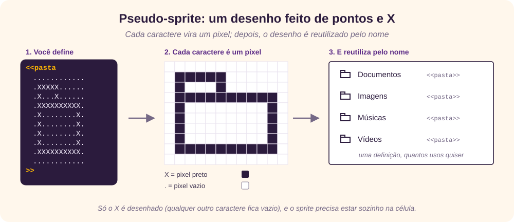
Dois detalhes testados: só o X é desenhado (qualquer outro caractere fica em branco), e <<nome>> precisa estar sozinho na célula; no meio de um texto, ele aparece como «nome». Para pôr um rótulo ao lado, use uma coluna: <<pasta>> | Documentos.
De imagem para sprite
O original propõe um roteiro para transformar uma imagem em pseudo-sprite: [1]
- Converter a imagem para preto e branco e reduzir a largura à metade (os caracteres são mais altos que largos).
- Enviá-la a um conversor de ASCII art, como o Convert Images to ASCII Art, com largura de até 200 caracteres. O endereço no original tem um erro de digitação (“onvert”); o correto está nas referências. [16] [17]
- No texto baixado, trocar todo caractere que não seja espaço por
Xe todo espaço por ponto. - Colar o resultado entre
<<nomee>>.
Para diagramas UML, o PlantUML também tem sprites de verdade, em tons de cinza, definidos com sprite $nome e gerados a partir de imagens com java -jar plantuml.jar -encodesprite. [15]
Salt dentro de outros diagramas
Um wireframe pode aparecer dentro de outro diagrama, em uma nota, uma legenda ou o rótulo de um elemento. Basta colocá-lo entre {{salt e }}. [2]
@startuml
class Login
note right of Login
{{salt
{
Usuário | "MeuNome "
Senha | "**** "
[Cancelar] | [ OK ]
}
}}
end note
@enduml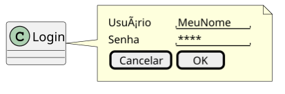
Exemplo completo
O exemplo final do original junta quase tudo numa só tela: menu, abas, campos, lista suspensa, caixa de grupo, botões de opção, lista com rolagem, tabela, árvore e botões com ícones. Os rótulos misturam inglês e português, como no original. [1]
![Tela completa gerada pelo PlantUML: no topo, uma linha com os rótulos area1 a area7; abaixo, a barra de menus File, Edit, Source e ?, com o item About aberto; as abas General, Fullscreen, Behavior e Saving; os campos Login e Password; a lista Smart Mode e uma caixa Options com três caixas de seleção; os botões de opção Masculino e Feminino; uma lista com rolagem com Acre, Amapa e Amazonas; uma caixa Privacy com três opções; uma tabela de cinco colunas; uma árvore com World, Europe e Africa; e os botões OK e Cancel.](rc_images/SaltExemplo.svg)
Ver o código completo
@startsalt
'skinparam BackgroundColor lightblue
{+
|area1|area2|area3|area4|area5|area6|area7
|.|{* File | Edit | Source | ?
' File | New | Open File | - | Close | Close All | - | Exit
? | About}|*|*|*|*
|.
|.|{/ <b>General | Fullscreen | Behavior | Saving }|*|*|*|*
|.
|.|Login |"MyName "|.
|.|Password |"**** "|.
|.
|.|Open image in|{ ^Smart Mode^ }|{^Options
[X] Smooth images when zoomed
[X] Confirm image deletion
[ ] Show hidden images
}
|.|Sexo|{(X) Masculino
() Feminino}
|.
|.|Estado|{SI
Acre
Amapa
Amazonas
}|{^"Privacy" | (X) public | () default | () private} |*|*
|.
|.|{#
. | Column 2 | Column 3 | Column 4 | Column 5
Row 1 | value 1 | value 2 | value 3 | value 4
Row 2 | long cell | * | * | *
}|*|*|{+{T
+ World
++ Europe
+++ Italy
+++ Germany
++++ Berlin
++ Africa
}}|*
|.
|.|.|.|.|[ OK<&account-login> ]|[Cancel<&circle-x>]
|.
}
@endsaltO truque de layout está na primeira linha: |area1|area2|…|area7 cria sete colunas com rótulos, e as linhas seguintes começam com |. para deixar a primeira coluna vazia, como uma margem. Os asteriscos (|*|*) fazem o menu, as abas e a tabela ocuparem várias colunas. Numa tela real, a linha de rótulos seria apagada depois de ajustar o layout.
Referência rápida
| Sintaxe | Resultado |
|---|---|
@startsalt … @endsalt | Início e fim do wireframe. |
[OK] · () · (X) · [] · [X] | Botão, opção, opção marcada, caixa, caixa marcada. |
"texto " · ^lista^ | Campo de texto · lista suspensa. |
| · . · * | Nova coluna · célula vazia · estende a célula da esquerda. |
{ {# {! {- {+ | Grade sem linhas, com todas, verticais, horizontais, só a borda. |
{^"título" | Caixa de grupo. |
{S · {SI · {S- | Rolagem nas duas direções · vertical · horizontal. |
.. == ~~ -- | Separadores pontilhado, duplo, grosso e simples. |
{T com +, ++… | Árvore; com |, árvore com colunas. |
{/ a | b } | Abas; uma por linha e } | para abas verticais. |
{* a | b } | Menu; a 2ª linha abre um item, e - é separador. |
<&ícone> | Ícone Open Iconic. |
<<nome … >> · <<nome>> | Define · reutiliza um pseudo-sprite. |
{{salt … }} | Salt dentro de outro diagrama. |
Revisão rápida
Tente responder antes de abrir cada pergunta.
1. Qual a diferença entre um wireframe e um mockup?
O wireframe mostra só a estrutura e o conteúdo da tela, sem cores; o mockup já tem a aparência final, com cores, fontes e imagens.
2. Como desenhar uma caixa de seleção marcada e outra desmarcada?
[X] Marcada e [] Desmarcada.
3. O que define a largura de um campo de texto?
O texto entre aspas, incluindo os espaços: "Nome " gera um campo mais largo que "Nome".
4. Qual abertura desenha só a borda externa de uma grade?
{+.
5. Numa tabela {#, para que servem o ponto e o asterisco?
O ponto deixa a célula vazia; o asterisco faz a célula da esquerda se estender sobre a atual.
6. Como fazer abas verticais?
Com {/, uma aba por linha, fechando com } | para que o conteúdo fique ao lado.
7. Por que <<pasta>> Documentos não mostra o ícone?
Porque o pseudo-sprite precisa estar sozinho na célula. Use <<pasta>> | Documentos.
8. Como colocar um wireframe dentro de uma nota de um diagrama de classes?
Entre {{salt e }}, com {{salt na mesma linha.
Referências
- Giovani Perotto Mesquita, “Building Mockups with PlantUML”, GitHub, texto original deste tutorial, github.com/GiovaniPM/MyCourses/blob/master/PlantUML/Course Salt.md.
- PlantUML, “Salt (Wireframe)”, acesso em 25/09/2026, plantuml.com/salt.
- PlantUML, site oficial, acesso em 25/09/2026, plantuml.com.
- Wikipedia (em inglês), “Website wireframe”, acesso em 25/09/2026, en.wikipedia.org/wiki/Website_wireframe.
- Wikipedia (em inglês), “Mockup”, acesso em 25/09/2026, en.wikipedia.org/wiki/Mockup.
- Wikipedia (em inglês), “Software prototyping”, acesso em 25/09/2026, en.wikipedia.org/wiki/Software_prototyping.
- PlantUML, “Download”, acesso em 25/09/2026, plantuml.com/download.
- Visual Studio Marketplace, “PlantUML” (jebbs), acesso em 25/09/2026, marketplace.visualstudio.com/items?itemName=jebbs.plantuml.
- Graphviz, site oficial, acesso em 25/09/2026, graphviz.org.
- PlantUML, “Creole”, acesso em 25/09/2026, plantuml.com/creole.
- PlantUML, “Common commands”, acesso em 25/09/2026, plantuml.com/commons.
- Wikipedia (em inglês), “Graphical widget”, acesso em 25/09/2026, en.wikipedia.org/wiki/Graphical_widget.
- PlantUML, “Open Iconic”, acesso em 25/09/2026, plantuml.com/openiconic.
- Iconic, “Open Iconic”, repositório no GitHub, acesso em 25/09/2026, github.com/iconic/open-iconic.
- PlantUML, “Sprite”, acesso em 25/09/2026, plantuml.com/sprite.
- ManyTools, “Convert Images to ASCII Art”, acesso em 25/09/2026, manytools.org/hacker-tools/convert-images-to-ascii-art.
- Wikipedia (em inglês), “ASCII art”, acesso em 25/09/2026, en.wikipedia.org/wiki/ASCII_art.